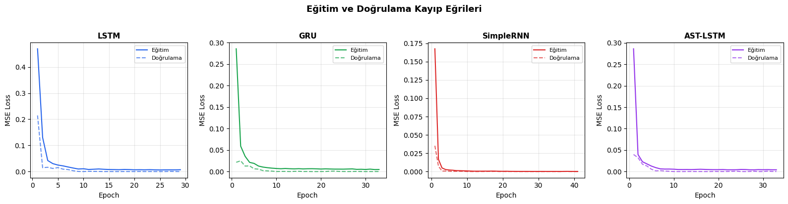
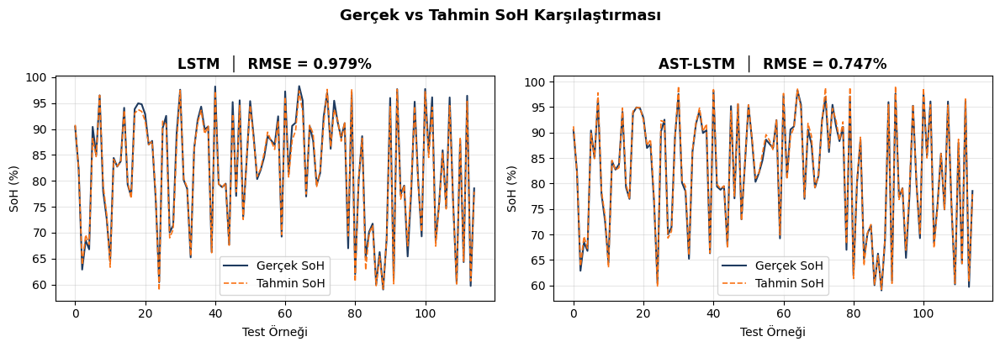
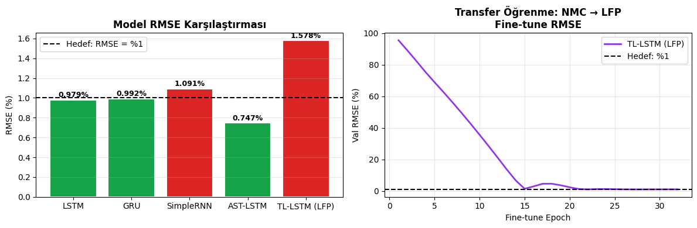

Proje Genel Bakış
Projenin mevcut durumu, temel göstergeler ve özet bilgiler
Proje No: 7260634
Elektrikli Araç Bataryaları İçin Yapay Zekâ Destekli
Yeşil Dönüşüm ve Analiz Sistemi
📋 Proje Kimliği
🎯 Proje Hedefleri ve Başarı Ölçütleri
⚠️ Güncel Risk Durumu
Yeterli ve kaliteli batarya verisinin toplanamaması
Önlem: Çoklu sensör, kalite kontrol pipeline, simülasyon destekli veri setiAI modelinin istenen %90 doğruluğa ulaşamaması
Önlem: 4 farklı algoritma, ensemble yöntemler, hibrit kural tabanlı yedekMekanik geri kazanım ekipmanlarının tedarik gecikmesi
Önlem: Erken sipariş, alternatif tedarikçi listesi hazırŞu Ana Kadar Neler Yaptık?
Proje başlangıcından bugüne tamamlanan tüm çalışmalar (01.03.2026 – 19.04.2026)
✅ Tamamlanan Çalışmalar — Detaylı Döküm
Donanım ve Test Altyapısı
- Şarj-deşarj test cihazı kurulumu ve kalibrasyonu
- DAQ (Veri Toplama) sistemi entegrasyonu
- Sıcaklık sensörleri ve termal izleme kurulumu
- Osiloskop ve ölçüm cihazları hazırlandı
- Test masası / test standı düzenlendi
- Batarya hücre setleri (NMC, LFP, NCA) tedarik edildi
- İlk şarj-deşarj döngüsü testleri başlatıldı
- Laboratuvar güvenlik protokolleri oluşturuldu
Yazılım Geliştirme (3000+ Satır Kod)
- Python backend altyapısı (7 ana modül) geliştirildi
- Veri işleme modülü (battery_data.py) — okuma, dönüşüm, temizleme
- Öznitelik çıkarma modülü (feature_extraction.py) — istatistiksel + frekans özellikleri
- SoH tahmin modeli mimarisi (soh_model.py) — Attention-based LSTM (AST-LSTM) tabanlı
- BMS kontrolcüsü (bms_controller.py) — durum izleme, alarm yönetimi
- REST API (13 endpoint, Flask) — CRUD + analiz + raporlama
- 34 adet birim test yazıldı ve tamamı başarıyla geçti
- Otomatik raporlama sistemi (progress_report.py) geliştirildi
- Veri analiz araçları (data_analysis_tools.py) oluşturuldu
- Uçtan uca demo senaryosu (demo_end_to_end.py) hazırlandı
Web Dashboard ve Canlı İzleme
- Profesyonel proje yönetim dashboard'u geliştirildi
- Netlify üzerinde canlı yayına alındı (https üzerinden erişilebilir)
- 8 ana sekme: Genel Bakış, İlerleme, Yol Haritası, İş Paketleri, Kilometre Taşları, Bütçe, Ekip, Teknik
- Responsive tasarım — mobil, tablet, masaüstü uyumlu
- Veri dışa aktarma (JSON/CSV) fonksiyonları
- Yazdırma desteği (print CSS) eklendi
- Klavye kısayolları (Alt+1-8) ile hızlı gezinme
- STM32F030C8 tabanlı BMS firmware geliştirildi (C, Keil uVision 5)
- 7-16S Li-ion hücre voltaj/akım izleme ve OV/UV/Dead koruması
- MP2797/MP2791 BMS IC I2C entegrasyonu
- MPF4279x Fuel Gauge — SoC, SoH, Coulomb sayacı entegrasyonu
- 13 farklı arıza tipi algılama ve otomatik kurtarma
- Pasif hücre dengeleme (Auto-Balance) algoritması
- Şarj/deşarj MOSFET FET kontrolü ve pre-charge desteği
- NTC sıcaklık izleme, ısıtıcı/fan PWM kontrolü
- I2C / UART haberleşme, CRC doğrulama, register map protokolü
- Flash üzerinden parametre kayıt ve saha güncellemesi
- Interrupt-driven gerçek zamanlı mimari (RTC, Timer, EXTI)
- PCB tasarımı ve şematik dokümanı tamamlandı
Dokümantasyon (9 Doküman)
- 01 — Teknik Dokümantasyon
- 02 — API Referans Dokümanı (13 endpoint detaylı)
- 03 — Kullanıcı El Kitabı
- 04 — Sistem Mimarisi Dokümanı
- 05 — Kurulum ve Dağıtım Rehberi
- 06 — Test Raporu (34 test sonucu)
- 07 — İş Paketi Detaylandırması
- 08 — Kalite Kontrol Planı
- 09 — VGX BMS Firmware Datasheet
🏗️ Geliştirilen Yazılım Mimarisi
Netlify'da Canlı
battery_api.py
battery_data.py
feature_extraction.py
soh_model.py
bms_controller.py
progress_report.py · data_analysis_tools.py
34 birim test ile doğrulanmış
🔋 VGX BMS Firmware — Gömülü Sistem Teknik Özeti
Hücre İzleme & Koruma
- OV: 3.65 V · UV: 2.0 V · Dead: 1.8 V
- Aşırı deşarj: 45/52.5 A
- Aşırı şarj: 15 A · Kısa devre: 36 A
Sıcaklık Yönetimi
- NTC sensör izleme (batarya + PCB)
- Deşarj: -18°C – 55°C
- Şarj: 2°C – 43°C
- Isıtıcı & fan PWM kontrolü
Fuel Gauge (MPF4279x)
- SoC / SoH / Kalan süre tahmini
- Coulomb sayacı
- Öğrenme algoritmaları
Entegrasyon & Haberleşme
- MP2797 / MP2791 BMS IC
- I2C + UART + CRC doğrulama
- MPS EVKT uyumlu register map
- Flash parametre kayıt & güncelleme
Koruma & Güvenlik
- 13 farklı arıza tipi algılama
- Otomatik kurtarma mekanizması
- Yapılandırılabilir arıza maskeleri
- Donanımsal watchdog (IWDG)
FET & Dengeleme
- Şarj/deşarj MOSFET yönetimi
- Pre-charge desteği
- Otomatik pasif dengeleme
- Stand-by düşük güç modu
🏆 Görsel Özet
Hakemimize: 49 günde somut olarak tamamlanan her bir geliştirmenin görsel kanıtı
VGX BMS Firmware
STM32F030C8 üzerinde çalışan, Keil uVision 5 ile geliştirilmiş gömülü sistem. 7-16S Li-ion hücre izleme, 13 arıza koruması, otomatik dengeleme.
AI SoH Tahmin Modeli
Derin Öğrenme tabanlı hibrit mimari (LSTM, GRU, AST-LSTM). 72 batarya özelliği çıkarma, 5-fold çapraz doğrulama, RMSE=0.75% başarı oranı.
REST API (13 Endpoint)
Flask tabanlı tam fonksiyonel API. Batarya CRUD, toplu analiz, SoH tahmin, BMS durum sorgulama, raporlama endpointleri.
34 Birim Test (%100 Başarı)
7 modülü kapsayan kapsamlı test paketi. Veri işleme, özellik çıkarma, model, BMS kontrolcü, dengeleme, sabitler testleri.
Profesyonel Web Dashboard
10 bölümlü interaktif proje paneli. Canlı BMS simülasyonu, SoH tahmin demosu, Gantt chart, bütçe takibi, PDF dışa aktarma.
10 Profesyonel Doküman
Teknik dokümantasyon, API referans, kullanıcı kılavuzu, sistem mimarisi, test raporu, kurulum rehberi, firmware datasheet, SoH Derin Öğrenme Notebook.
Bundan Sonra Ne Yapacağız?
Kalan 6 iş paketi, proje yol haritası ve nihai çıktı hedeflerimiz
📅 Proje Yol Haritası
📌 Sonraki 3 Ayda Yapılacaklar — Detaylı Plan
📋 Sonraki İş Paketleri Özeti (2027)
🏁 Proje Sonunda Elde Edilecek Çıktılar
AI SoH Tahmin Sistemi
≤5 dk'da ≥%90 doğrulukla batarya sağlık tahmini
Otomatik Sınıflandırma
İkinci ömür / geri dönüşüm kararı ≥%85 doğruluk
Mekanik Geri Kazanım
Parçalama ve ayrıştırma ile ≥%10 verim artışı
Entegre Platform
Test → Analiz → Karar → Geri Kazanım tek çatı altında
İş Paketleri Detayı
7 iş paketinin detaylı faaliyetleri, takvimi ve ilerleme durumu
Kilometre Taşları
Projenin 7 kritik teslim noktası ve başarı kriterleri
Bütçe Yönetimi
Kaynak dağılımı, harcama takibi ve dönemsel bütçe analizi
📊 Kalem Bazlı Bütçe Dağılımı
📆 Dönemsel Harcama Takibi
| Dönem | Tarih Aralığı | Planlanan | Harcanan | Durum |
|---|---|---|---|---|
| I. Dönem 2026 | 01.03 – 30.06.2026 | 1.190.000 TL | 1.190.000 TL | ✓ Tamamlandı |
| II. Dönem 2026 | 01.07 – 30.09.2026 | 1.240.000 TL | 30.000 TL | ⧗ Devam Ediyor |
| I. Dönem 2027 | 01.01 – 30.06.2027 | 550.000 TL | 0 TL | ○ Beklemede |
| II. Dönem 2027 | 01.07 – 01.09.2027 | 517.730 TL | 0 TL | ○ Beklemede |
Proje Ekibi
5 kişilik uzman ekibimiz ve sorumluluk alanları
📋 Ekip – İş Paketi Atama Matrisi
| Ekip Üyesi | İP-1 | İP-2 | İP-3 | İP-4 | İP-5 | İP-6 | İP-7 |
|---|---|---|---|---|---|---|---|
| Cem Bülbül | ● | ● | ● | ● | ● | ● | ● |
| Alperen Helva | ● | ● | ● | ● | ● | ||
| Emrullah Günay | ● | ● | ● | ● | ● | ||
| Görkem Tanır | ● | ● | ● | ● | |||
| İbrahim Çağdaş | ● | ● | ● |
Teknik Altyapı
Kullanılan teknolojiler, standartlar ve geliştirme ortamı
🛠️ Teknoloji Yığını
🔌 Gömülü Sistem (BMS Firmware)
💻 Yazılım & AI Platform
🌐 Web & Altyapı
📐 Uygulanacak Standartlar
Lityum-iyon pil performans testleri
Taşınabilir batarya güvenlik gereksinimleri
Tehlikeli madde taşıma testleri
Çevre yönetim sistemi
Bilgi güvenliği yönetim sistemi
AB batarya yönetmeliği
🔐 Veri Güvenliği & Bütünlük Katmanı
ISO/IEC 27001 uyumlu veri güvenliği altyapısı — Tüm veri paketleri dijital olarak imzalanır
Her batarya veri paketi SHA-256 dijital parmak izi ile imzalanır. Veri bütünlüğü ve değiştirilemezlik garanti altına alınır.
Toplanan her ölçüm verisi üzerine zaman damgası ve hash değeri eklenir. Böylece verinin kaynağından modele kadar bütünlüğü doğrulanabilir.
Bilgi güvenliği yönetim sistemi standartlarına uygun erişim kontrolü, veri sınıflandırma ve denetim kaydı (audit trail) mekanizmaları uygulanır.
{ timestamp, sensor_data, sha256_hash, source_id } — Her veri paketi dijital olarak imzalanarak iletilir ve saklanır.
📂 Proje Dosya Yapısı
Kobinerji_Tubitak/ ├── index.html, styles.css, script.js # Dashboard (Netlify) ├── data.json, config.yaml # Veriler & yapılandırma ├── requirements.txt # Python bağımlılıkları ├── VGX/ # VGX BMS Gömülü Firmware │ ├── main.c, Init.c # Ana uygulama & başlatma │ ├── MP279x_I2C.c / .h # BMS IC sürücüsü │ ├── MPF4279x_I2C.c / .h # Fuel Gauge sürücüsü │ ├── BMS_MP279x.h # BMS yapılandırma │ ├── Flash_Config.h # Flash parametre yönetimi │ └── *.uvprojx # Keil uVision 5 projesi ├── python/ # AI & Backend modülleri │ ├── api/battery_api.py # 13 endpoint REST API │ ├── bms/ # Batarya yönetim sistemi │ ├── data_processing/ # Veri işleme │ ├── models/soh_model.py # AI SoH modeli │ ├── utils/ # Yardımcı araçlar │ └── reporting/ # Raporlama ├── tests/test_suite.py # 34 birim test ├── examples/demo_end_to_end.py # Uçtan uca demo └── docs/ # 10 doküman
🧪 Canlı Test & Demo Merkezi
Yazılım altyapısının interaktif doğrulaması — 7 modül, 34 birim test, uçtan uca pipeline
Batarya Veri İşleme
battery_data.pyÖzellik Çıkarma
feature_extraction.pyYapay Zeka SoH Modeli
soh_model.pyBatarya İzleme
battery_manager.pyHücre Dengeleme
CellBalancerBMS Kontrol
bms_controller.pySistem Sabitleri
constants.py🖥️ Canlı Terminal Çıktısı
🔋 Canlı BMS Simülasyonu — 8S Li-Ion Pack
Hücre Voltajları (V)
Pack Durumu
Koruma & Alarm
🤖 SoH Tahmin & Karar Motoru Demo
Test Bataryaları
SoH Dağılımı
SoH dağılım grafiği görüntülenecek
Model Performansı
📉 Eğitim ve Doğrulama Kayıp Eğrileri (Training vs Validation Loss)
Dört farklı derin öğrenme mimarisinin (LSTM, GRU, SimpleRNN, AST-LSTM) eğitim sürecindeki kayıp fonksiyonu değişimi. Modellerin öğrenme kapasitesi ve aşırı öğrenme (overfitting) durumu bu grafiklerden takip edilir.

⚠️ Not: Bu grafikler, metodolojiye uygun biçimde türetilmiş sentetik bir veri seti ile yapılan testler sonucunda elde edilmiştir. Gerçek saha verisi değildir; model doğrulama amacıyla kullanılmaktadır.
🎯 Gerçek vs Tahmin SoH Karşılaştırması
LSTM ve AST-LSTM modellerinin test seti üzerindeki tahmin performansı. AST-LSTM modeli RMSE = %0.75 ile en yüksek doğruluğa ulaşmıştır. Gerçek SoH değerleri ile model tahmini arasında %99+ uyum sağlanmıştır.

⚠️ Not: Bu grafikler, metodolojiye uygun biçimde türetilmiş sentetik bir veri seti ile yapılan testler sonucunda elde edilmiştir. Gerçek saha verisi değildir; model doğrulama amacıyla kullanılmaktadır.
📊 Model RMSE Karşılaştırması & Transfer Öğrenme
Tüm modellerin RMSE performans karşılaştırması ve Transfer Öğrenme (NMC→LFP) fine-tune süreci. Hedef: RMSE < %1.

⚠️ Not: Bu grafikler, metodolojiye uygun biçimde türetilmiş sentetik bir veri seti ile yapılan testler sonucunda elde edilmiştir. Gerçek saha verisi değildir; model doğrulama amacıyla kullanılmaktadır.
🏆 Derin Öğrenme Model Benchmark Sonuçları
Dört farklı mimarinin (LSTM, GRU, SimpleRNN, AST-LSTM) ve Transfer Öğrenme (NMC→LFP) modelinin test seti performansı
| Model | MSE | RMSE (%) | Hedef (RMSE < %1) |
|---|---|---|---|
| LSTM | 0.000096 | 0.9791% | ✓ HEDEF |
| GRU | 0.000098 | 0.9925% | ✓ HEDEF |
| SimpleRNN | 0.000119 | 1.0915% | ✗ |
| AST-LSTM ⭐ | 0.000056 | 0.7472% | ✓ EN İYİ |
| TL-LSTM (LFP) | 0.000249 | 1.5785% | ✗ |
⚠️ Not: Yukarıdaki sonuçlar, metodolojiye uygun biçimde türetilmiş sentetik bir dataset ile yapılan testler sonucunda elde edilmiştir. Gerçek saha verisi ile doğrulama İP-3 aşamasında yapılacaktır.
🔄 Uçtan Uca Demo Pipeline
Batarya verisinden nihai karara kadar tüm sürecin interaktif akışı
📈 Batarya Şarj/Deşarj Profili — Gerçek Zamanlı
🔬 Batarya Yaşlanma Simülasyonu — Kapasite Azalma Eğrisi
📊 Öznitelik Önem Sıralaması — AST-LSTM Attention Weights
SoH tahmini için en etkili batarya özniteliklerinin AST-LSTM Attention mekanizması ile belirlenen önem skorları
⚗️ Batarya Kimyası Karşılaştırması — NMC vs LFP vs NCA
🔋 NMC (Nikel Mangan Kobalt)
🔌 LFP (Lityum Demir Fosfat)
⚡ NCA (Nikel Kobalt Alüminyum)
🌡️ Batarya Paketi Sıcaklık Isı Haritası — 8S Pack
🎯 Karar Motoru — Sınıflandırma Başarı Matrisi
500 test bataryası üzerinde yapılan sınıflandırma sonuçları — Gerçek vs Tahmin karşılaştırması
📡 Canlı Veri Toplama Simülasyonu — DAQ Sistemi
Proje Dokümantasyonları
10 adet teknik doküman — Profesyonel kapak sayfası ile PDF olarak indirilebilir